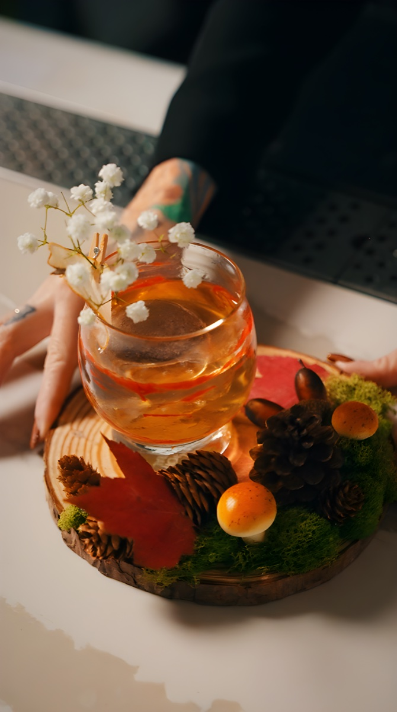

Restaurant Social Media Marketing That Fills Seats.
Your food is incredible. Your atmosphere is dialed in. But the people who would love your restaurant don’t even know it exists yet. Social media is how you solve it. Every scroll is a chance to turn a stranger into a reservation.
Restaurant Social Media Marketing Services
In-House Videography
Great social content starts with great footage. Our videographers, editors, and creative leads all sit on our team. When we plan a shoot with you, the people executing it are the same people who built the strategy. Nothing gets handed off to a contractor, nothing gets watered down in translation.
- Signature dishes and new menu launches
- Cocktails, wine, and beverage programs
- Kitchen action and chef storylines
- Dining room atmosphere and ambiance
- Staff personality and hospitality culture

Social Media Strategy & Content Calendar
Content without strategy is just noise. We build monthly content calendars that align with your business goals, seasonal rhythms, and local market opportunities.
- Monthly content calendar with approved posts
- Platform-specific strategy (Instagram, TikTok, Facebook)
- Hashtag research and local discovery optimization
- Caption writing and brand voice development
- Posting schedule optimized for engagement timing

Community Management & Engagement
Social media is a two-way conversation. Every interaction is a chance to deepen a relationship and turn a follower into a regular. We handle daily community management so nothing falls through the cracks.
- Daily comment monitoring and response
- DM management and reservation inquiries
- Local community engagement and relationship building
- User-generated content reposting and curation
- Review response support across platforms